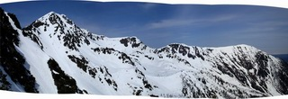
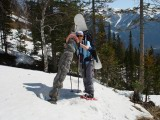
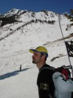
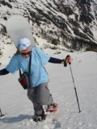

Допервомайский Тальцинский
- 24-26 апреля 2009 -

Как обычно: созвон, сговор и поехали. Сначала электричка до Выдрино,
потом машина до турбазы. И по темноте пошлёпали. После часа ходьбы догнали
автомобилистов, они заблудились. Вот теперь состав полный: Макс, Ира,
Света, Андрей и автор строк. Великолепная пятёрка отважных снегоступщиков.
Палатки, костерок, чай. Отбой в 2 часа. Подъём в 7 часов. Выход в девять.
Снега очень много. Спасибо человеческой изобретательности за снегоступы.
Прошли плоскотину, начался подъём. Перед танцплощадкой следы крупного
медведя. Даже не крупного, а оОочень крупного. Скорее всего прошел вчера
вечером, следы очень чёткие.
На танцплошадке тихо. Надо было вчера приходить. Далее местами сухой траверс
до бабы.
Потом где снегом, где травой до места стоянки.Мы с Андреем пришли первыми
и стали откапывать воду. Потом подтянулись все остальные.
И тут Макс достал пиво.
Восторгу не было предела.
Бутылка быстро опустела.
РифмА, блин.
 . .
. . 
После чего солнце засветило ярче. В общем жизнь налаживается. Поставили
палатки, пожевали и - в гору. Залезли на пупырь Путина. Макс и Андрей
надругательски катанули с пупыря без штанов, чем повергли в шок... хотя
нет... не повергли в шок.
Позагорали, попили, поели и к палаткам разными курсами. Девушки налево,
мальчики, через озеро, направо. Снег охеренно скользкий, нарастание скорости
какое-то квадратичное. Зачетно навернулся Макс. Мне тоже пришлось кувыркнуться.
Вечером ещё сюрприз от Максима - плов. А к плову много чего ещё. Праздник
живота вобщем.

. . 
Утром подъём, завтрак и тропёжка в кулуар под кодовым названием… э-э...
как его. Надо у Светы уточнить как он называется. До верха не дошли, солнце
нагрело склон и со скалок начало активно сыпать "снежками".
Немного отставшие Макс и Ира вынуждены были отступить. Ну а мы, откуда
смогли катанули.
Быстро собрались и решили выкатывать. Классику, вроде "выходить ногами",
решили оставить на безснежное потом. Выкат к подножию тацпложадки и подъём
к тропе - неплохо. Мы пошли дальше. Попытались не терять высоту и лесом
уехать к плоскотине, что в общем получилось.
Волей случая поехали двумя курсами. Света и Андрей спустились к реке раньше
и переехали реку по снегу. Максу, Ире и мне пришлось выстёгиваться и переходить
по камням. Прошли 150-200 метров без серьёзного набора высоты и оказались
на нашем снегоступном следе. Плоскотина удивила малым количеством снега.
Шли по траве, остаткам снега. По вчера ещё сухому руслу текла река, переходили
по брёвнам. Мы с Андреем попытались ускориться, но на электричку опоздали.
Хорошо что есть запасная, экспрессная. А в экспрессе Лёха Белокрылов с
рассказом про вагон циган. Но это он сам расскажет.
Вот и всё.
Хвала создателю за снег.
Текст: Алексей Пестов
Фото: Андрей Савченко
Апрель 2009
|